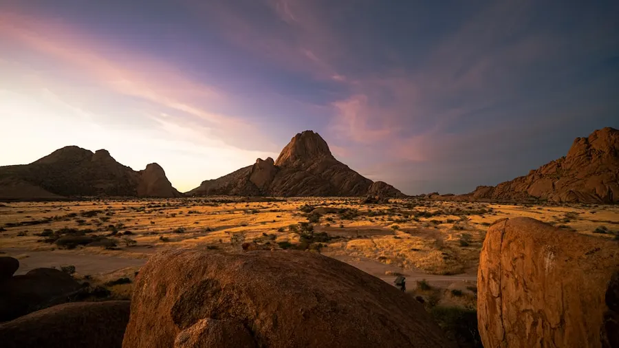
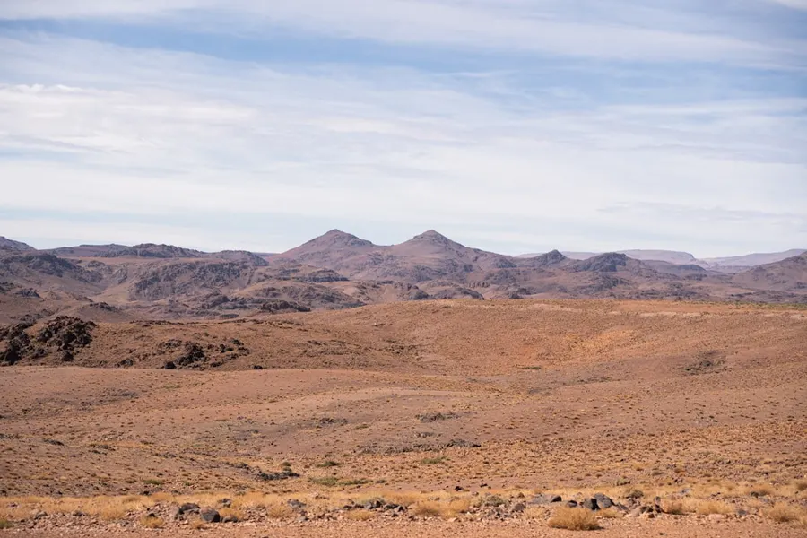
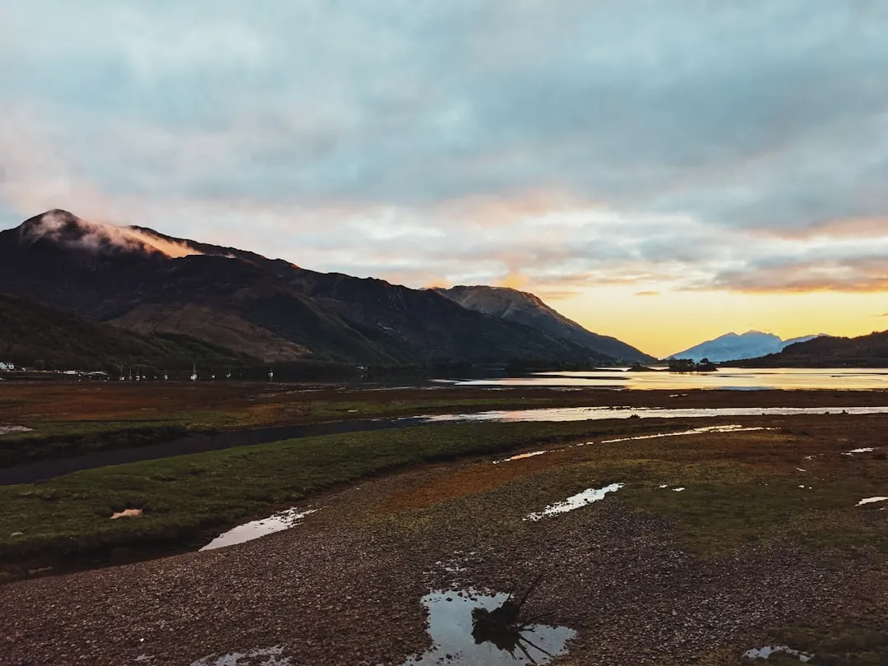

01 · Pourquoi y aller
Qu'est‑ce qui rend la Jordanie irrésistible en octobre ?
Octobre offre un équilibre parfait entre chaleur diurne (22–28 °C) et fraîcheur nocturne (12–15 °C), idéal pour explorer les sites archéologiques sans transpiration excessive. La saison des pluies n’est pas encore installée, les routes restent praticables et les paysages désertiques prennent des teintes dorées.
C’est également la période des festivals de Jerash, où les reconstitutions romaines remplissent les rues de la ville antique, et du festival de musique de Amman, qui attire artistes locaux et internationaux. L’ambiance culturelle est à son comble, tout en restant authentique.


02 · Quand partir
Pourquoi choisir octobre pour visiter la Jordanie ?
Le climat d’octobre se situe entre la canicule estivale (plus de 35 °C) et le froid hivernal du désert (en dessous de 5 °C). Les journées sont ensoleillées, les soirées fraîches, ce qui rend les randonnées dans le Wadi Rum ou l’Ascension du Mont Nébo particulièrement agréables.
L’affluence touristique chute d’environ 40 % après la haute saison de juillet‑août, ce qui signifie moins d’attente aux entrées de Pétra et des hébergements plus disponibles à des tarifs légèrement inférieurs.
- Températures : 22–28 °C le jour, 12–15 °C la nuit
- Précipitations : < 20 mm pour le mois
- Événements : Festival de Jerash (du 5 au 14 octobre), Amman Music Festival
03 · Quartiers et zones à explorer
Quelles régions couvrir pour un itinéraire complet en octobre ?
Commencez par Amman, la capitale vibrante, puis dirigez‑vous vers le nord pour Jerash et le site nabatéen de Umm Qais. La côte de la mer Morte, à 30 km au sud d’Amman, offre des bains de boue thérapeutique et des couchers de soleil spectaculaires.
Poursuivez vers le sud‑est : le désert du Wadi Rum, classé UNESCO, et enfin l’incontournable Pétra, à 5 h de route de Aqaba, la ville portuaire rouge qui ouvre l’accès à la mer Rouge et aux récifs de coral de la baie d’Aqaba.
- Amman – centre historique, souks et musée d’art islamique
- Jerash – ruines romaines parfaitement conservées
- Mer Morte – point le plus bas du globe, baignade en flottement
- Wadi Rum – paysages lunaires, bivouac sous les étoiles
- Pétra – cité nabatéenne taillée dans le grès rose

Photo : Richard James / Unsplash
04 · Incontournables
Que voir et faire en Jordanie en octobre ?
Le site le plus emblématique reste bien sûr Pétra. En octobre, les températures permettent de gravir le Sentier des Princes sans s’épuiser, et la lumière du matin éclaire la Trésor d’une façon presque mystique.
Le désert du Wadi Rum propose des excursions en 4×4, des randonnées à dos de chameau et des nuits en campement bédouin. Les nuits sont fraîches, idéal pour observer le ciel étoilé sans pollution lumineuse.
Ne manquez pas le Baptême de Jésus à Bethany Beyond the Jordan, site sacré pour les chrétiens, ouvert toute l’année et peu fréquenté en automne.
- Pétra – visite guidée ou libre, prévoir 2 jours complets
- Wadi Rum – trek de 2 jours, bivouac ou lodge de luxe
- Mer Morte – flottaison, soins de boue, coucher de soleil à Ein Gedi
- Jerash – spectacle nocturne de son et lumière (octobre)
- Madaba – mosaïques byzantines, carte de la Terre Sainte
05 · Gastronomie
Quelles spécialités goûter pendant votre séjour ?
Le mansaf, plat national à base de riz, yaourt fermenté (jameed) et agneau, se déguste dans les restaurants d’Amman et les maisons bédouines du Wadi Rum. En octobre, les marchés offrent des figues fraîches, des dattes de la vallée du Jourdain et des agrumes locaux.
Essayez le falafel croustillant à la sauce tahini, le mezze de hummus, mutabbal et taboulé, ainsi que le kunafeh, pâtisserie au fromage sucré, très populaire pendant le Ramadan qui commence fin octobre.
- Mansaf – agneau, riz, sauce jameed
- Zarb – cuisson souterraine bédouine, viande et légumes
- Kunafeh – fromage fondu, sirop de sucre, pistaches
- Arak – alcool anisé, parfait en soirée au désert
06 · Hébergement
Où dormir selon son budget en octobre ?
Pour les voyageurs modestes, les pensions familiales d’Amman et les auberges de Jerash proposent des chambres à 20–30 € la nuit, petit‑déjeuner inclus. Les campings du Wadi Rum offrent des tentes traditionnelles à 25 € avec repas bédouin.
Les voyageurs recherchant le confort peuvent choisir des hôtels 4 * à Aqaba (80–120 €) avec vue sur la mer Rouge, ou les lodges de luxe de Pétra, comme le Mövenpick Resort, où le service inclut le transport vers le site.
07 · Budget
Combien coûte un voyage en Jordanie en octobre ?
Le coût moyen par jour se situe entre 55 et 80 €, incluant hébergement 30 €, repas 15 €, transport local 10 € et entrées aux sites 5–10 €. Les billets d’avion restent la part la plus variable, mais une fois sur place, Odyssa vous aide à optimiser chaque dépense.
Les bons plans : acheter le Jordan Pass (70 €) qui inclut les visas de 30 jours et l’accès à plus de 40 sites, dont Pétra. En octobre, le Pass est souvent vendu avec une réduction de 10 % sur les billets d’entrée au Wadi Rum.
- Jordan Pass – 70 €, visa + entrées
- Repas de rue – 3–5 €
- Transport en bus inter‑urbain – 5–12 € par trajet
- Location de voiture – 30 €/jour, idéale pour la flexibilité
08 · Déplacements
Comment se déplacer efficacement en Jordanie en octobre ?
Le réseau de bus inter‑urbain, exploité par JETT, relie Amman, Jerash, la Mer Morte, Aqaba et le sud du pays. Les horaires sont fiables en automne, les routes sont dégagées et les températures permettent de voyager confortablement.
Pour plus de liberté, Odyssa recommande la location d’une voiture de taille moyenne (Toyota Corolla ou similaire). Les routes principales sont bien entretenues, les panneaux en anglais sont présents, et le GPS intégré à Odyssa vous guide jusqu’aux points hors‑carte comme les sentiers du Wadi Rum.
- Bus JETT – 5–12 € par trajet, fréquence 4‑6 h
- Taxi partagé (service “service”) – 2–4 € en ville
- Location voiture – 30 €/jour, assurance incluse
09 · Conseils pratiques
Quels préparatifs indispensables avant de partir en Jordanie ?
Le visa touristique peut être obtenu à l’arrivée (30 $) ou via le Jordan Pass, qui simplifie les formalités. En octobre, pensez à emporter des vêtements en couches : t‑shirt le jour, pull léger le soir, et un foulard pour se protéger du soleil ou du sable.
L’électricité est de 230 V, prise de type C et D. Téléchargez les cartes hors‑ligne d’Odyssa avant le départ, car la couverture mobile devient irrégulière dans le désert. Enfin, hydratez‑vous régulièrement : l’air sec du désert se fait sentir dès la fin de l’après‑midi.
Questions fréquentes sur Jordanie
Faut‑il un visa pour entrer en Jordanie ?
Oui, les ressortissants de l’Union européenne doivent un visa de 30 jours, payable à l’arrivée (30 $) ou inclus dans le Jordan Pass.
Quelle est la monnaie en Jordanie et où la changer ?
La monnaie est le dinar jordanien (JOD). Vous pouvez le changer dans les banques d’Amman, les bureaux de change à la Mer Morte et les aéroports.
Quel est le climat en Jordanie en octobre ?
Octobre offre des journées de 22 à 28 °C, des nuits fraîches autour de 12–15 °C, et moins de 20 mm de pluie, idéal pour les visites en plein air.
Combien de temps faut‑il pour visiter les principaux sites ?
Un itinéraire de 10 à 12 jours permet de couvrir Amman, Jerash, Mer Morte, Wadi Rum et Pétra avec un rythme agréable.
Les sites touristiques sont‑ils ouverts en octobre ?
Oui, toutes les attractions majeures (Pétra, Jerash, Wadi Rum, Mer Morte) sont ouvertes, et plusieurs festivals culturels sont programmés en octobre.
Le conseil Odyssa
Utilisez Odyssa pour créer votre itinéraire jour par jour, synchroniser les réservations du Jordan Pass et recevoir des rappels de transport hors‑ligne.
Planifiez votre séjour à Jordanie jour par jour et gardez tout hors ligne avec Odyssa, gratuitement.